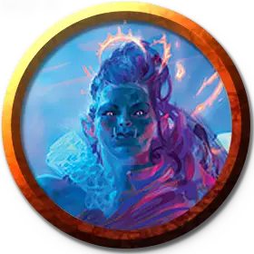

Профессор экспрессии Призмари
Prismari Professor of Expression
Маленький или Средний Гуманоид (Чародей), любое мировоззрение

Класс Доспеха 13 (16 с доспехами мага)
Хиты 97 (15к8 + 30)
Скорость 40 футов
| мод | спас | ||
|---|---|---|---|
| СИЛ | 14 | +2 | +2 |
| ЛОВ | 16 | +3 | +6 |
| ТЕЛ | 15 | +2 | +2 |
| мод | спас | ||
|---|---|---|---|
| ИНТ | 15 | +2 | +5 |
| МДР | 13 | +1 | +4 |
| ХАР | 19 | +4 | +7 |
Навыки Акробатика +6, Атлетика +5, Восприятие +4, Выступление +10, Магия +5
Сопротивление урону огонь, электричество
Чувства пассивное Восприятие 14
Языки Общий, и ещё четыре любых языка
Опасность 7 (2900 опыта)
Бонус мастерства +3
Действия
Мультиатака. Профессор совершает три атаки Пепельным ударом.
Пепельный удар. . Рукопашная атака заклинанием: +7 к попаданию, досягаемость 15 футов, одна цель. Попадание: 13 (2к8 + 4) урона огнём.
Взмах молнией (Перезарядка 6). Профессор выпускает дуги магической молнии в двух существ, которых он может видеть в пределах 60 футов. Каждая цель должна совершить спасбросок Ловкости Сл 15, получая 35 (10к6) урона электричеством при провале или половину этого урона при успехе.
Использование заклинаний. Профессор накладывает одно из следующих заклинаний, используя Харизму в качестве базовой характеристики (Сл спасброска от заклинаний 15):
• Неограниченно: малая иллюзия [minor illusion];
• 2/день каждое: туманное облако [fog cloud], порыв ветра [gust of wind], доспехи мага [mage armor].
Бонусные действия
Пламенный прыжок. Профессора окутывает пламя и он прыгает на расстояние до 30 футов в любом направлении. Когда профессор приземляется, пламя распространяется в радиусе 10 футов вокруг профессора, а затем исчезает. Каждое существо по выбору профессора в этой области должно преуспеть в спасброске Ловкости Сл 15, иначе получает 7 (2к6) урона огнём.
Описание
Профессора выражения воплощают в себе яркость магии Призмари. Используя непрерывное движение, плавную грацию и переплетающиеся шаги, эти преподаватели направляют стихии ветра, пламени и молнии, чтобы сопровождать их. Их быстрая и прекрасная магия, становится быстрой смертью в бою, завораживая своим энергетическим потоком. Разрушительные удары молний и обжигающие языки пламени встречают врагов профессоров лицом к лицу.
Профессора, придерживающиеся философии самовыражения Призмари, сосредоточены на том, чтобы магия становится искусством в момент проявления. Будь то для того, чтобы создать зрелище, которое зрители никогда не забудут, или для того, чтобы в мгновение ока сразить своих врагов, эти преподаватели демонстрируют своим ученикам красоту созидания.
Учёные призмари
Ученые факультета Призмари считают, что искусство - это самая настоящая форма магии. Они используют магию, чтобы создавать великолепные произведения искусства, и они используют артистизм, чтобы сделать свою магию впечатляющей.